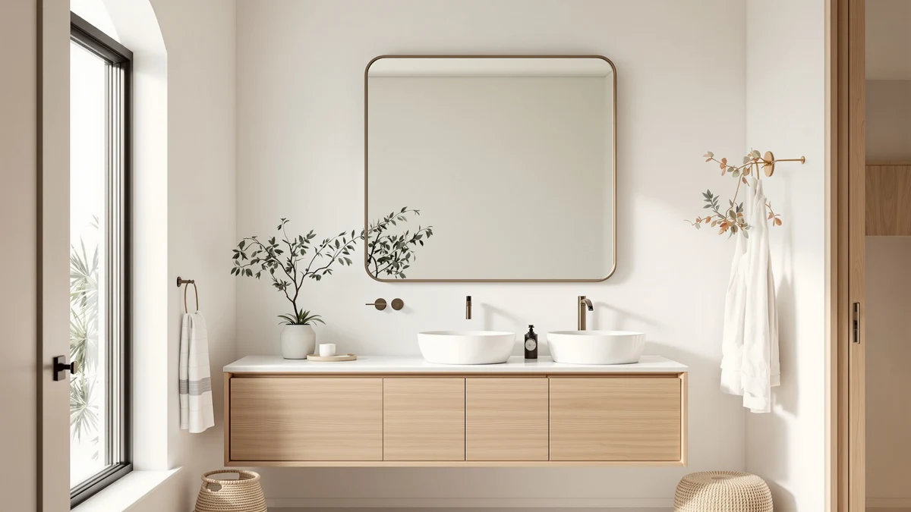

Best Framed vs Frameless Mirror (2026) | Best Bathroom Mirrors


Things to Know Before You Buy
- A frame hides the glass edge, which is the part most likely to chip or develop black spots as a mirror ages.
- Frameless mirrors often run $10 to $20 cheaper at the same size, but that gap narrows on larger pieces where the glass drives the cost.
- Framed mirrors collect dust and water spots along the inner border, so they take a few extra seconds to wipe down.
- Both types use the same float glass and silver backing, so reflection quality is identical unless you buy the cheapest tier.
- Your room style usually decides this faster than the specs do. Traditional and farmhouse bathrooms lean framed, while modern and small bathrooms lean frameless.
The framed vs frameless mirror question comes up the moment you stand in the bathroom aisle and realize the two options cost about the same. A framed mirror wraps the glass in metal, wood, or a molded border that you see every time you walk in. A frameless mirror shows you nothing but glass and polished edges. Both hang on the same wall and reflect the same face, so the real decision lands on style, upkeep, and how much you want the mirror to announce itself.
You will find strong opinions on both sides, and most of them skip the practical trade-offs. We compared dozens of bathroom mirrors across both camps, from $25 frameless rectangles to $70 brushed-nickel framed models, and the gap between them is smaller than the marketing suggests. The right pick depends on your wall, your cleaning habits, and the look you are after. This guide walks through what separates the two so you can stop second-guessing the purchase.
Quick Answer
A framed mirror is the better choice if your bathroom leans traditional, transitional, or farmhouse, or if you want a finished look that hides the glass edge and ties into your hardware. A frameless mirror wins for modern and small bathrooms where you want the wall to feel open and the price to stay low. Neither reflects better than the other, so pick based on style and how much cleaning you tolerate.
What is Framed?
A framed bathroom mirror surrounds the glass with a border made of metal, wood, MDF, or molded resin. That frame does two jobs. It seals the vulnerable edge of the mirror against moisture, and it gives the piece a defined shape that looks like a deliberate design choice rather than a builder-grade afterthought. The frame is the whole argument for this side.
You will see frames in brushed nickel, matte black, oil-rubbed bronze, and warm wood tones, which lets you echo your faucet, lighting, or cabinet hardware. The LOAAO 24x36 brushed-nickel model we recommend uses a metal frame that handles the humidity most bathrooms throw at it. Cheaper framed mirrors use MDF or particleboard wrapped in a vinyl finish, and those can swell or peel after a year of steam if the seams are not sealed well.
The frame also adds physical depth. A framed mirror sits a half inch to an inch off the wall, which catches light along the border and creates a soft shadow line. That detail makes the mirror feel substantial on the wall. The trade-off is more weight and a slightly more involved hanging job, since heavier frames usually need a cleat or solid anchors.
What is Frameless Mirror?
A frameless mirror is a single sheet of glass with finished edges and no border at all. Manufacturers grind and polish those edges, sometimes adding a slight bevel, so the rim is smooth to the touch and safe to hang without a surround. On the frameless side, the appeal is simplicity. Nothing competes with your reflection, and the mirror almost disappears into the wall.
The KOCUUY and Sweetcrispy frameless models we looked at use a flat polished edge, while some pricier options add a beveled edge that catches light at the perimeter. Frameless mirrors tend to sit nearly flush against the wall, usually about a quarter inch out, which keeps the profile clean and makes a small bathroom feel larger.
Since there is no frame to seal the edge, manufacturers protect frameless mirrors with a backing coat and, on better units, a moisture-resistant film. Budget frameless mirrors can develop black spotting at the corners over several years if water seeps behind the silver. A quality frameless mirror in the $30 to $40 range holds up fine in a normal home bathroom with decent ventilation.
Head-to-Head: Build Quality & Durability
Build quality comes down to how each design protects the glass edge. A frame physically shields that edge, which is the first place a mirror fails. Black spots, called desilvering, almost always start at an exposed corner where moisture reaches the silver backing. A metal-framed mirror like the LOAAO models seals that weak point, so it tends to age better in a steamy bathroom.
Frameless mirrors put more pressure on the factory edge work and the backing coat. A well-made frameless mirror with a sealed, polished edge holds up for years. A cheap one with a rough edge and thin backing can spot early. You get what you pay for here more than with framed mirrors, where the border forgives a lot.
Weight and mounting differ too. Framed mirrors are heavier and usually hang on a cleat or D-rings, which feels secure but takes more care to level. Frameless mirrors often use clips or adhesive-backed mounts and go up faster. Neither design has a clear durability edge if you buy a quality unit. The framed approach simply carries a wider safety margin at the budget end.
Head-to-Head: Price & Value
On price, the gap is real but smaller than people expect. At the 16x24 to 22x30 range, frameless mirrors like the KOCUUY at $34.99 and the Sweetcrispy arched models near $25 to $30 undercut comparable framed pieces by $10 to $20. The frame is extra material and an extra manufacturing step, so it costs more.
That gap shrinks as size grows. A 24x36 frameless mirror and a 24x36 framed mirror can land within a few dollars of each other, because the glass dominates the cost at larger sizes. The LOAAO 24x36 framed model at $69.99 sits at the higher end, but you pay for the brushed-nickel frame and the finished look. Frameless wins on raw dollars at small and medium sizes, while framed earns its premium when the frame replaces a decorative element you would have bought anyway.
Head-to-Head: Use Experience
Day to day, the difference shows up in two places: cleaning and how the room feels. A frameless mirror is faster to wipe. You spray, pull a squeegee or cloth straight across, and run right off the edge with nothing to catch dust or dried toothpaste spray. A framed mirror has an inner lip where the glass meets the border, and that lip collects water spots and grime. It adds maybe ten seconds per cleaning, which adds up if you wipe the mirror every day.
The framed mirror gives you more in return for that upkeep. The border frames your reflection the way a picture frame frames art, and it hides the slightly imperfect factory edge of the glass. In a room with visible hardware, a matching frame pulls the whole space together.
A frameless mirror makes a small or modern bathroom feel more open, because your eye reads uninterrupted wall and glass. You lose the styling hook, but you gain a clean, airy look. If you change your decor often, a frameless mirror adapts to anything you put around it. A framed mirror commits you to its finish until you swap it out.
When to Choose Framed
Choose a framed mirror when the frame does real work for your room. Here, the border is a styling tool. If your bathroom has brushed-nickel faucets, black cabinet pulls, or warm wood tones, a matching frame ties the space together in a way bare glass cannot.
Framed also makes sense in traditional, transitional, and farmhouse bathrooms where frameless glass would look unfinished. The frame reads as intentional and gives the wall a focal point. If you want the longest service life in a high-humidity bathroom without overthinking it, the sealed edge of a framed mirror buys you margin. The LOAAO 24x36 brushed-nickel mirror suits this buyer. You pay more, around $70, but you get a finished look and a frame that handles steam. Pick framed when you want the mirror to be part of the design, not just a reflective surface.
When to Choose Frameless Mirror
Choose a frameless mirror when you want the wall to breathe and the budget to stay low. With frameless, less is the point. Modern, minimalist, and contemporary bathrooms look best with uninterrupted glass, and a frameless mirror keeps the sightline clean.
Frameless is also the smart pick for small bathrooms. With no border to box in the reflection, the wall feels larger and the room feels less crowded. If you rent or redecorate often, frameless glass matches any future scheme, so you are not locked into a finish. The KOCUUY 16x24 frameless mirror at $34.99 and the Sweetcrispy arched models suit this buyer. You save money, you clean faster, and you get a look that disappears into the room. Pick frameless when you want the mirror to do its job quietly and let the rest of the bathroom set the tone.
Our Top Picks
Whichever side you land on, these three mirrors stood out in our comparison. The first is our overall framed pick, the second is the best value, and the third is the frameless option worth your money.

Editor’s Pick
LOAAO 24X36 Inch Brushed Nickel
Our top framed pick. The brushed-nickel metal frame seals the glass edge against steam and pairs with common bathroom hardware. At 24x36, it fits a standard vanity.
$69.99
Check Price on Amazon
Best Value
LOAAO 22"X30" Black Rectangle Bathroom
A matte-black framed mirror that delivers the finished look for $39.99. The 22x30 size fits most vanities, and black pairs with almost any palette.
$39.99
Check Price on Amazon
Premium Choice
KOCUUY Frameless Mirror 16"x24" Bathroom
The frameless choice for a clean, modern wall. Polished edges, a near-flush mount, and a $34.99 price make it the easy pick for small or contemporary bathrooms.
$34.99
Check Price on AmazonFrequently Asked Questions
Are framed or frameless mirrors better for a bathroom?
Do frameless mirrors last as long as framed ones?
Are frameless mirrors harder to keep clean?
Are frameless mirrors cheaper than framed mirrors?
Can you hang a frameless mirror in a steamy bathroom?
Final Verdict
Neither framed nor frameless is better in the abstract. The right one is the one that fits your bathroom. Go framed, and the LOAAO 24x36 brushed-nickel mirror gives you a sealed edge and a finished look that ties into your hardware. Go frameless, and the KOCUUY 16x24 keeps the wall clean and the price under $35. Match the mirror to your room style and your cleaning patience, and either side will serve you for years.